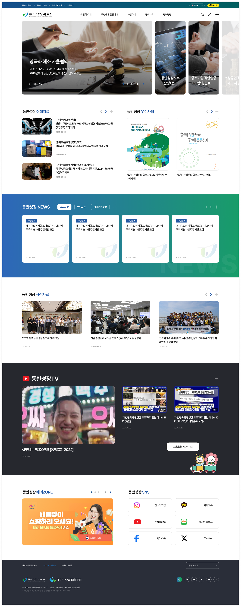
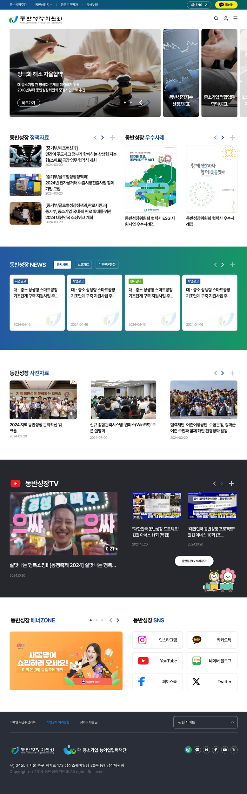
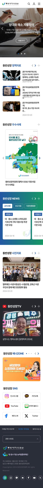

동반성장위원회 웹사이트 리뉴얼
동반성장위원회 웹사이트 리뉴얼은 텍스트 중심 콘텐츠와 다부서 자료 등록 구조를 가진 공공기관 사이트의 전면 개편 프로젝트입니다. 기존 사이트는 PC 전용에 정보 위계가 흐려져 모바일 사용자와 외부 방문자 모두에게 가독성·탐색성 이슈가 있었습니다.
공공기관의 정보 위계를 보존하되 현대적 비율의 캔버스로 가독성과 시각적 균형을 확보하기 위해 본문 16px·1600px 그리드를 적용했고, 직원과 외부 방문자 모두가 동일한 정보 구조에 익숙해지도록 PC·모바일 동일 레이아웃 원칙을 채택해 디바이스 간 분기를 최소화했습니다. 서브페이지 깊이가 깊은 공공기관 IA 특성에 맞춰 좌측 고정 GNB를 적용해 현재 위치를 항상 인지할 수 있도록 했으며, 공공기관의 핵심 커뮤니케이션 채널인 뉴스·보도자료 섹션의 위계를 상향해 메인 영역에서 우선 노출되도록 콘텐츠 배치를 재설계했습니다.
디자인 시스템과 PC·태블릿·모바일 3개 해상도 풀 페이지, 신규 GNB 구조와 서브페이지 템플릿까지 운영 단계 인계를 위해 정리했습니다.
Note — 본 산출물은 리뉴얼 설계 단계의 본인 의사결정 기반 디자인입니다. 프로젝트 중반 클라이언트 요청으로 운영 디자인은 외부 레퍼런스 카피 방향으로 전환되어, 현재 라이브된 화면은 본 산출물과 다릅니다.
고객사의 니즈를 충족하여 디자인을 개선하는 방향으로
기존 홈페이지의 자료를 그대로 업그레이드
공공기관 홈페이지의 디자인의 한계를 업그레이드
화면 사이즈 1600px 제작
위치 재배치 및 배경 강조 처리
UI/UX 그리드 원칙에 맞춰 배치
동반성장위원회 사이트맵
-
위원회 소개
- 인사말
- 비전 · 미션
- 조직도
- 연혁
-
사업 안내
- 동반성장 지수
- 적합업종
- 협력이익공유
-
미디어
- 보도자료
- 공지사항
- 갤러리
-
자료실
- 발간물
- 통계자료
-
참여
- Q&A
- 신청 · 문의


